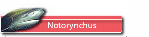
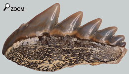
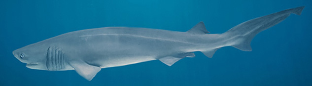
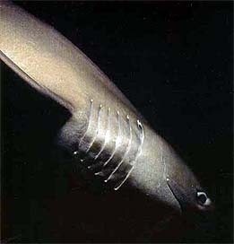

|
  |
||
 |
|
||
 Les petits peignes  Mais la dent la plus magique est la dent de devant puisque les dentelures se répartissent autour d'un axe de symétrie ce qui en fait une «quasi-étoile». Par contre les dents supérieures sont moins spectaculaires.
Hexanchus le requin archaïque Hexanchus est considéré comme un requin assez primitif et se distingue par 2 caractères remarquables : 
- Une nageoire dorsale unique localisée à l’arrière près de la nageoire caudale.
 MœursC’est un requin qui vit en eaux profondes la journée et remonte la nuit vers la surface pour se nourrir. Ce n’est pas un requin capable de nager vite mais il est endurant. On pense qu’il s’agit d’un poisson qui effectue des migrations. Comme beaucoup de requins, Hexanchus est opportuniste et consomme des poissons, de mammifères marins et toutes autres sortes de proies. Sa relative lenteur n’en fait pas un prédateur remarquable, c’est pourquoi l’animal maraude recherchant de bonnes fortunes (poissons ou mammifères malades ou morts, céphalopodes et crustacés …) Les dents de la mâchoire suggèrent que le requin cisaille la chair des proies qui ne peuvent pas être avalées entières. |
|||